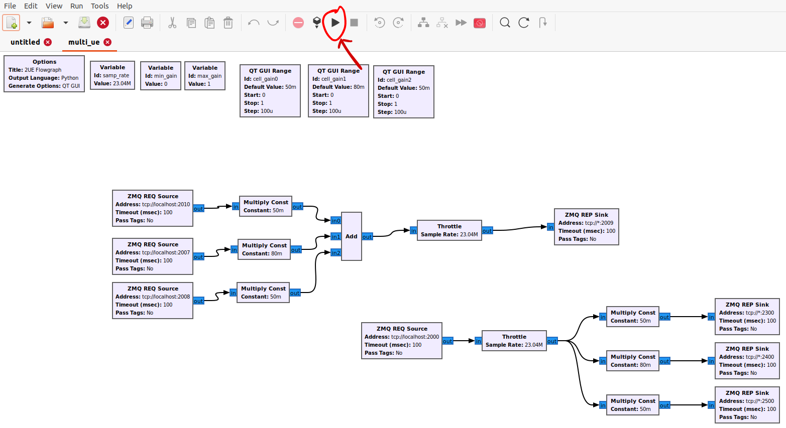

Running the SS Xapp
Table of Contents
Prerequisites
System Requirements
OS: Ubuntu Desktop 20.04 LTS (Focal Fossa) Baremetal Preferred
10 Gbps NIC (if using USRPs)
CPU(s): 12 vCPUs (Threads)
RAM: 16 GB minimum
Storage: 100 GB
Hardware
For ZMQ scenario:
1 machine
For USRP scenario:
3 - 4 machines (1 for EPC & eNB, 2 - 3 for UEs)
1 B210 for each machine
1 Octoclock for 10MHz reference
Software
Deploy Near-Real Time RIC (EPC & eNB server ONLY)
Follow instructions on the OAIC documentation: O-RAN Near-Real Time RIC Installation Guide
Next install all the required dependencies, ZMQ, UHD and asn1c Compiler
Follow instructions on OAIC documentation for installation of dependencies, ZMQ and as1nc compiler: srsRAN with E2 Agent Installation Guide. Do NOT follow the section that says
srsRAN with E2 agent Installation.Clone down the srslte modified with e2
cd ~/oaic
git clone https://github.com/openaicellular/srslte-e2
cd srslte-e2
rm -rf build
mkdir build
export SRS=`realpath .`
cd build
cmake ../ -DCMAKE_BUILD_TYPE=RelWithDebInfo \
-DRIC_GENERATED_E2AP_BINDING_DIR=${SRS}/e2_bindings/E2AP-v01.01 \
-DRIC_GENERATED_E2SM_KPM_BINDING_DIR=${SRS}/e2_bindings/E2SM-KPM \
-DRIC_GENERATED_E2SM_GNB_NRT_BINDING_DIR=${SRS}/e2_bindings/E2SM-GNB-NRT
make -j`nproc`
sudo make install
sudo ldconfig
sudo srslte_install_configs.sh user --force
Warning
The rest of this section is for EPC & eNB server ONLY if you are working with USRPs and ZMQ. If you’re setting up for a UE for USRPs, skip to the Starting the network with USRPs section.
After install srslte modified, open the user_db.csv file with your preferred text editor
sudo -i
cd .config/srslte
vim user_db.csv
Replace these lines of code with the existing configurations at the bottom of the file. This allows the ENB to be able to connect with 3 UEs.
Kept in the following format: “Name, Auth, IMSI, Key, OP_Type, OP/OPc, AMF, SQN, QCI, IP_alloc”.
ue2,xor,001010123456780,00112233445566778899aabbccddeeff,opc,63bfa50ee6523365ff14c1f45f88737d,8000,000000001635,7,dynamic
ue3,xor,001010123456781,00112233445566778899aabbccddeeff,opc,63bfa50ee6523365ff14c1f45f88737d,8002,0000000014eb,7,dynamic
ue1,xor,001010123456789,00112233445566778899aabbccddeeff,opc,63bfa50ee6523365ff14c1f45f88737d,9001,00000000131b,7,dynamic
Exit out of sudo once you are done editing the file
exit
We can now clone the repositories we will need to run build the xapp and onboard it as well as run multiple UEs.
Setup
Install the following dependencies
sudo apt install gnuradio python3-pip iperf3 -y
Under the oaic directory, run the following commands
cd ~/oaic
git clone https://github.com/openaicellular/ss-xapp.git
Note
If you do not have Nginx web server setted up, head over to the xApp Deployment - General Guidelines and follow the Configuring the Nginx Web Server section ONLY and nothing else.
Create a symlink from the xApp’s config file. This can be replaced by another symlink in the future. Reload Nginx once this has been done.
cd ~/oaic/ss-xapp
sudo cp config-file.json /var/www/xApp_config.local/config_files/
sudo systemctl reload nginx
Now we are going to build the xapp from the DockerFile
cd ~/oaic/ss-xapp
sudo docker build . -t xApp-registry.local:5008/ss:0.1.0
Paste the following in the ss-xapp-onboard.url file located in the ss-xapp directory. Substitute the <machine_ip_addr> with the IP address of your machine. You can find this out by pasting the command ifconfig or hostname -I in the terminal.
cd ~/oaic/ss-xapp
vim ss-xapp-onboard.url
{"config-file.json_url":"http://<machine_ip_addr>:5010/config_files/config-file.json"}
Starting the network with ZMQ
Note
If you are using USRPs, head to Starting the network with USRPs.
Terminal 1: Start the Core Network/Add Ues to Network Namespace
sudo ip netns add ue1
sudo ip netns add ue2
sudo ip netns add ue3
sudo ip netns list
sudo srsepc
Terminal 2: Set up Environment Variables and Base Station
export E2NODE_IP=`hostname -I | cut -f1 -d' '`
export E2NODE_PORT=5006
export E2TERM_IP=`sudo kubectl get svc -n ricplt --field-selector metadata.name=service-ricplt-e2term-sctp-alpha -o jsonpath='{.items[0].spec.clusterIP}'`
sudo srsenb --enb.n_prb=100 --enb.name=enb1 --enb.enb_id=0x19B \
--rf.device_name=zmq --rf.device_args="fail_on_disconnect=true,tx_port=tcp://*:2000,rx_port=tcp://localhost:2009,id=enb,base_srate=23.04e6" --ric.agent.remote_ipv4_addr=${E2TERM_IP} --log.all_level=warn --ric.agent.log_level=debug --log.filename=stdout --ric.agent.local_ipv4_addr=${E2NODE_IP} --ric.agent.local_port=${E2NODE_PORT} --slicer.enable=1 --slicer.workshare=0
Warning
Make sure you can see the eNB have a RIC State Establish message as shown in the image below before proceeding.

Note
If you are not getting a RIC State Established message, you need to restart the e2term-alpha pod by using the command: sudo kubectl delete pod -n ricplt -l app=ricplt-e2term-alpha. If that still doesn’t work, undeploy and redeploy the near-realtime RIC.
Terminal 3: Set up the first UE
sudo srsue \
--rf.device_name=zmq --rf.device_args="tx_port=tcp://*:2010,rx_port=tcp://localhost:2300,id=ue,base_srate=23.04e6" --usim.algo=xor --usim.imsi=001010123456789 --usim.k=00112233445566778899aabbccddeeff --usim.imei=353490069873310 --log.all_level=warn --log.filename=stdout --gw.netns=ue1
Terminal 4: Set up the second UE
sudo srsue \
--rf.device_name=zmq --rf.device_args="tx_port=tcp://*:2007,rx_port=tcp://localhost:2400,id=ue,base_srate=23.04e6" --usim.algo=xor --usim.imsi=001010123456780 --usim.k=00112233445566778899aabbccddeeff --usim.imei=353490069873310 --log.all_level=warn --log.filename=stdout --gw.netns=ue2
Terminal 5: Set up the third UE
sudo srsue \
--rf.device_name=zmq --rf.device_args="tx_port=tcp://*:2008,rx_port=tcp://localhost:2500,id=ue,base_srate=23.04e6" --usim.algo=xor --usim.imsi=001010123456781 --usim.k=00112233445566778899aabbccddeeff --usim.imei=353490069873310 --log.all_level=warn --log.filename=stdout --gw.netns=ue3
GUI
Open the GNU Radio Companion App. It should be installed when installing the gnuradio package. Open the multi_ue.grc file located in the ~/oaic/ss-xapp directory.
Press play as marked in the image below. This allows the UEs to attach to the eNodeB base station.
{kind=link}
No GUI
Note
If you have already ran the GNU Radio Companion Application, skip this step.
If you running without a GUI, open a new terminal and run the following commands:
cd ~/oaic/ss-xapp
python3 multi_ue.py
Iperf3
Note
Execute the next commands each in a separate terminal
Terminal 6/7/8: Set up iperf3 test on the server side
iperf3 -s -B 172.16.0.1 -p 5006 -i 1
iperf3 -s -B 172.16.0.1 -p 5020 -i 1
iperf3 -s -B 172.16.0.1 -p 5021 -i 1
Note
Execute the next commands each in a separate terminal
Terminal 9/10/11: Set up iperf3 test on the client side
We add an additional bandwidth argument “-b xxM” on each iperf3 test on client side to create a scenario of UEs trying to access more or less of resources on the network. If a UE surpasses the pre-determined threshold for amount of data packets transmitted, it is considered as malicious by the SS xApp.
sudo ip netns exec ue1 iperf3 -c 172.16.0.1 -p 5006 -i 1 -t 36000 -R -b 40M
sudo ip netns exec ue2 iperf3 -c 172.16.0.1 -p 5020 -i 1 -t 36000 -R -b 10M
sudo ip netns exec ue3 iperf3 -c 172.16.0.1 -p 5021 -i 1 -t 36000 -R -b 15M
You should notice traffic flow on both the server and client side for both UEs.
Move on to the Deploying the SS xApp section for deploying the xApp
Starting the network with USRPs
Note
If you already started the network using ZMQ, you can head to the Deploying the SS xApp section
For better performance of USRPs, we use the CDA-2990 Octoclock as an external clock reference source for the B210s. To ensure that the B210s recognize the source, we have to add an extra argument “clock=external” on the eNodeB and UE commands.

Connect the SMA cables from each of the 10 MHz out of the Octoclock to the REF IN port for the B210 as shown in the picture.
Connect the two Antennas in the RF A section for both the TX/RX and RX2 ports.
Connect the USB port from the B210 to your machines.
Before starting the network, check to see if each machine recognizes the USRPs by using the following command.
sudo uhd_images_downloader
sudo uhd_find_devices
Install iperf3 for all machines if not already done so.
sudo apt install iperf3 -y
Machine 1 - Terminal 1: Start the Core Network on server side (eNodeB server)
sudo srsepc
Machine 1 - Terminal 2: Set up Environment Variables and Base Station
export E2NODE_IP=`hostname -I | cut -f1 -d' '`
export E2NODE_PORT=5006
export E2TERM_IP=`sudo kubectl get svc -n ricplt --field-selector metadata.name=service-ricplt-e2term-sctp-alpha -o jsonpath='{.items[0].spec.clusterIP}'`
sudo srsenb --enb.n_prb=100 --enb.name=enb1 --enb.enb_id=0x19B --rf.device_name=uhd --rf.device_args="clock=external" --ric.agent.remote_ipv4_addr=${E2TERM_IP} --log.all_level=warn --ric.agent.log_level=debug --log.filename=stdout --ric.agent.local_ipv4_addr=${E2NODE_IP} --ric.agent.local_port=${E2NODE_PORT} --slicer.enable=1 --slicer.workshare=0
Warning
Make sure you can see the eNB have a RIC State Establish message as shown in the image below before proceeding.
Note
If you are not getting a RIC State Established message, you need to restart the e2term-alpha pod by using the command: sudo kubectl delete pod -n ricplt -l app=ricplt-e2term-alpha. If that still doesn’t work, undeploy and redeploy the near-realtime RIC.
Machine 2 - Terminal 1: Set up the first UE
sudo srsue \
--rf.device_name=uhd --rf.device_args="clock=external" --usim.algo=xor --usim.imsi=001010123456789 --usim.k=00112233445566778899aabbccddeeff --usim.imei=353490069873310 --log.all_level=warn --log.filename=stdout
Machine 3 - Terminal 1: Set up the second UE
sudo srsue \
--rf.device_name=uhd --rf.device_args="clock=external" --usim.algo=xor --usim.imsi=001010123456780 --usim.k=00112233445566778899aabbccddeeff --usim.imei=353490069873310 --log.all_level=warn --log.filename=stdout
Machine 4 - Terminal 1: Set up the third UE (If you have one)
sudo srsue \
--rf.device_name=uhd --rf.device_args="clock=external" --usim.algo=xor --usim.imsi=001010123456781 --usim.k=00112233445566778899aabbccddeeff --usim.imei=353490069873310 --log.all_level=warn --log.filename=stdout
Machine 1 - Terminal 3/4/5: Set up iperf3 test on the server side (eNodeB server)
iperf3 -s -B 172.16.0.1 -p 5006 -i 1
iperf3 -s -B 172.16.0.1 -p 5020 -i 1
iperf3 -s -B 172.16.0.1 -p 5021 -i 1 # If you have a third UE
Machine 2/3/4 - Terminal 2: Set up iperf3 test on the client side (UE servers)
We add an additional bandwidth argument “-b xxM” on each iperf3 test on client side to create a scenario of UEs trying to access more or less of resources on the network. If a UE surpasses the pre-determined threshold for amount of data packets transmitted, it is considered as malicious by the SS xApp.
sudo iperf3 -c 172.16.0.1 -p 5006 -i 1 -t 36000 -R -b 40M
sudo iperf3 -c 172.16.0.1 -p 5020 -i 1 -t 36000 -R -b 10M
sudo iperf3 -c 172.16.0.1 -p 5021 -i 1 -t 36000 -R -b 15M # If you have a third UE
You should notice traffic flow on both the server and client side for all three UEs. Move on to the next step.
Deploying the SS xApp
cd ~/oaic/ss-xapp
export KONG_PROXY=`sudo kubectl get svc -n ricplt -l app.kubernetes.io/name=kong -o jsonpath='{.items[0].spec.clusterIP}'`
export E2MGR_HTTP=`sudo kubectl get svc -n ricplt --field-selector metadata.name=service-ricplt-e2mgr-http -o jsonpath='{.items[0].spec.clusterIP}'`
export APPMGR_HTTP=`sudo kubectl get svc -n ricplt --field-selector metadata.name=service-ricplt-appmgr-http -o jsonpath='{.items[0].spec.clusterIP}'`
export E2TERM_SCTP=`sudo kubectl get svc -n ricplt --field-selector metadata.name=service-ricplt-e2term-sctp-alpha -o jsonpath='{.items[0].spec.clusterIP}'`
export ONBOARDER_HTTP=`sudo kubectl get svc -n ricplt --field-selector metadata.name=service-ricplt-xapp-onboarder-http -o jsonpath='{.items[0].spec.clusterIP}'`
export RTMGR_HTTP=`sudo kubectl get svc -n ricplt --field-selector metadata.name=service-ricplt-rtmgr-http -o jsonpath='{.items[0].spec.clusterIP}'`
curl -L -X POST "http://$KONG_PROXY:32080/onboard/api/v1/onboard/download" --header 'Content-Type: application/json' --data-binary "@ss-xapp-onboard.url"
curl -L -X GET "http://$KONG_PROXY:32080/onboard/api/v1/charts"
curl -L -X POST "http://$KONG_PROXY:32080/appmgr/ric/v1/xapps" --header 'Content-Type: application/json' --data-raw '{"xappName": "ss"}'
Warning
If you are repeating an experiement, you may want to restart the pod using the command below. By doing so, you do not have to undeploy and redeploy the xApp again.
sudo kubectl -n ricxapp rollout restart deployment ricxapp-ss
Running the xApp
In your EPC & eNB server’s terminal, print the logs for the SS xApp
Note
The SS xApp has to be deployed in order for this to work.
sudo kubectl logs -f -n ricxapp -l app=ricxapp-ss
Now run the test script with the following commands on a separate terminal, depending on the number of UEs you have.
Two UEs
cd ~/oaic/ss-xapp
sudo chmod +x zmqtwoue.sh
sudo ./zmqtwoue.sh
Three UEs
cd ~/oaic/ss-xapp
sudo chmod +x zmqthreeue.sh
sudo ./zmqthreeue.sh
After a short time you can observe through the logs that UE1 will be considered malicious and moved to a different slice. You also observe the traffic exchange for UE1 will significantly decrease.
Note
To run the script again, you have to restart the SS xApp and redeploy the network again.
sudo kubectl -n ricxapp rollout restart deployment ricxapp-ss